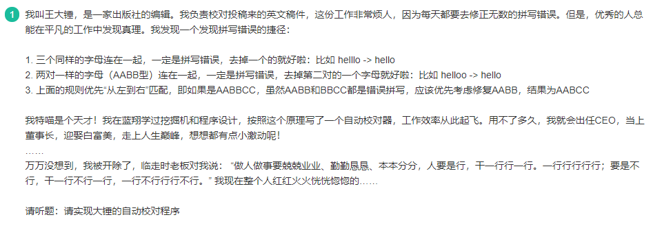
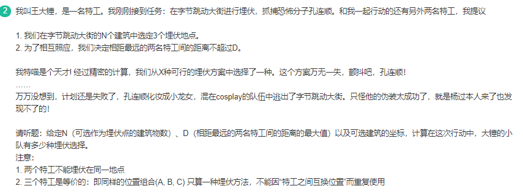

第一题 万万没想到之聪明的编辑
题目

思路
题目给出的两个条件非常清晰，我们有两个选择：一是原地修改字符串，二是新建一个字符串。这里我们选择第二种方法，因为原地修改涉及到字符数组下标的移动，需要考虑的内容比较多，比如，我们通常会采用遍历的方式去除不符合要求的字符，但在这道题里删除字符后，字符串长度发生了改变，不太好进行遍历。
我们使用一个新的字符串，每次遍历原字符串中的一个字符，判断是否可以加到新字符串的末尾：
- 如果加入后，会有三个同样的字母相连，不加；
- 如果加入后，会有两对同样的字母相连，不加。
此外，这样做还可以满足题目提到的”从左到右”规则。
代码
while True:
try:
n = int(input())
for i in range(n):
s = input()
res = ""
for i in range(len(s)):
if len(res)>=2 and res[-1]==res[-2]==s[i]:
continue
if len(res)>=3 and res[-3]==res[-2] and res[-1]==s[i]:
continue
res+=s[i]
print(res)
except:
break第二题 万万没想到之抓捕孔连顺
题目

思路
本题其实不难想到暴力的做法，我们只需要进行两层循环遍历所有建筑物区间，如果两个建筑物距离小于等于d，并且之间至少相隔一栋楼，即可在他们之间的所有楼中任选一栋楼，组成一个埋伏选择，加在结果中。
n,d = map(int, input().split())
pos = list(map(int, input().split()))
res = 0
for i in range(n-2):
for j in range(i+2, n):
if pos[j]-pos[i] > d:
break
res += j-i-1
print(res%99997867)但是这么做显然是超时的，实际上只能通过20%的数据，为了进一步优化，我们有几种思路：
- 首先，我们不必每次固定区间的左右边界，再在中间任选一栋楼。这样做的话，每次移动 j，都需要修改 res的值。这显然是不好的。我们只需要向右搜索j，找到 pos[j]-pos[i] <=d的最后一个位置。该区间内的所有可能的选择是这样计算的：我们只固定 i ，在 i+1 到 j 间任意选择两栋楼，并且组合不能重复。所以，可能的选择数为 ：（j-i）*（j-i-1）//2（概率论的知识，组合数C）
- 其次，我们不应当每次线性搜索 j ，这样会很慢。我们有两种办法进行优化:
- 二分查找搜索，因为pos数组是有序的。
- 每轮 j 循环跳出后，下一轮 j 循环从上一次跳出之前最后一个有效的位置 right 开始。因为 pos[right] - pos[i] <=d ，那么 pos[right] - pos[i+1] <=d 也是必然的，因为数组升序。
代码
n,d = map(int, input().split())
pos = list(map(int, input().split()))
res = 0
right = 2
for i in range(n-2):
tmp = 0
for j in range(right, n):
if pos[j]-pos[i] > d:
break
else:
tmp = j - i
right = j -1 #下一次j从本轮最后一个有效位置继续
if tmp>=2: # 固定i后有效的组合数
res += (tmp*(tmp-1)//2)%99997867
print(res%99997867)第三题 雀魂启动！
题目
思路
这道题主要考察的是回溯的知识，我们需要通过回溯来判断当前手上的14张牌是否可以和牌。
首先，我们要判断一下手上是否还有剩余的牌，如果没有，说明可以和牌，否则还需要继续判断。
第一点，我们要判断一下是否选取过雀头，我们可以通过目前的牌数是否为3的整数倍来判断。如果没有选过雀头，且第一个数字出现次数大于等于2，我们就尝试将它选为雀头，并从手牌中拿出去，接着继续递归判断剩余的牌是否符合和牌的条件。
第二点，如果第一点的尝试没有进行或者失败了（比如已经选过了雀头或者第一个数无法选为雀头或者第一个数选为雀头后无法和牌），我们尝试用第一个数组成刻子，并将第一个数组成的刻子从手牌中移除，接着继续判断剩余的牌是否符合和牌的条件。
第三点，如果第二点的尝试也失败了（比如第一个数字无法组成刻子或者组成刻子后无法和牌），我们就尝试将第一个数字组成顺子，将组成的顺子从手牌中移除，接着继续判断剩余的牌是否符合和牌的条件。
最后，如果上述三点都不行，则必然不能和牌。
我们在主函数中，尝试1-9的10个数字，看有哪些可以和牌即可。
因为这里我们传入递归函数的是列表的切片引用，等同于新建了一个列表，实际上并不会改变当前函数内的列表，所以并不需要显式的回溯，但其实是使用了回溯的思想，这一点要清楚。
代码
def isHu(nums):
"""
判断是否可以胡牌
:param nums:
:return:
"""
if not nums:
return True
n = len(nums)
count0 = nums.count(nums[0])
# 没出现过雀头，且第一个数字出现的次数 >= 2,去掉雀头剩下的能不能和牌
if n % 3 != 0 and count0 >= 2 and isHu(nums[2:]) == True:
return True
# 如果第一个数字出现次数 >= 3，去掉这个刻子后看剩下的能和牌
if count0 >= 3 and isHu(nums[3:]) == True:
return True
# 如果存在顺子，移除顺子后剩下的能和牌
if nums[0] + 1 in nums and nums[0] + 2 in nums:
last_nums = nums.copy()
last_nums.remove(nums[0])
last_nums.remove(nums[0] + 1)
last_nums.remove(nums[0] + 2)
if isHu(last_nums) == True:
return True
# 以上条件都不满足，则不能和牌
return False
def main(nums):
"""
遍历所有可以抓到的牌看能不能胡牌
:return:
"""
d = {}
for i in nums:
d[i] = d.get(i,0) + 1
card_list = set(range(1,10)) - {i for i,v in d.items() if v==4}#去除掉在手牌中已经出现四次的数字
res = []
for i in card_list:
if isHu(sorted(nums + [i])): # 如果这种抽牌方式可以和牌
res.append(i) # 加入和牌类型列表
res = ' '.join(str(x) for x in sorted(res)) if res else '0'
print(res)
s = input()
nums = [int(x) for x in s.split()]
main(nums)第四题 特征提取
题目
思路
这道题看上去比较复杂，但其实不难，我们只需要用一个哈希表，即字典，存储每一个时间的帧上特征其持续的时间（运动长度）。每一时刻，我们遍历当前帧上的所有特征，将哈希表上对应特征的运动长度加1（这里我们使用defaultdict，方便初始化），同时尝试更新最大特征运动长度。如果之前的某些特征在当前帧上没有出现，我们需要将其从字典中移除。
代码
from collections import defaultdict
n = int(input())
for i in range(n):
m = int(input())
longest = 0
dic = defaultdict(int)
for j in range(m):
li = list(map(int, input().split()))
li.pop(0)
hs = set()
for k in range(0, len(li), 2):
dic[(li[k],li[k+1])]+=1
longest = max(longest, dic[(li[k],li[k+1])])
hs.add((li[k],li[k+1]))
tmp = defaultdict(int)
for tup in hs:
tmp[tup] = dic[tup]
dic = tmp
print(longest)第五题 毕业旅行问题
题目
思路
这道题我只会用DFS来做，只能通过50%的测试用例，实际上存在着很多重复子问题，应该是DP更好，但是我看了答案没弄明白，希望后面能填坑吧！
代码
min_price = 1000000000
def dfs(now,path,price_sum):
global min_price
if len(path) == n:
min_price = min(price_sum + price[now][0], min_price)
else:
for i in range(n):
if i not in path:
dfs(i,path+[i],price_sum+price[now][i])
n = int(input())
price=[]
for i in range(n):
price.append(list(map(int,input().split())))
dfs(0,[0],0)
print(min_price)第六题 找零
题目
思路
这道题比较简单，本质上是一个贪心问题。找零钱问题还可以使用BFS来做，通常需要求不同组合的时候用BFS。
代码
n = 1024 - int(input())
coins = [64,16,4,1]
res = 0
for coin in coins:
res += n//coin
n = n%coin
print(res)第七题 机器人跳跃问题
题目
思路
由题目可知，能量为e的机器人想要越过高度为h的建筑，如果h大于e，那么e=e-（h-e）=2e-h；如果h小于e，那么e=e+（e-h）=2e-h，也就是其实无论怎么样，跳跃一次后，能量都为2e-h。
- 第一次跳跃成功，需要：2e-h1>=0，即e>=h1/2
- 第二次跳跃成功，需要：2（2e-h1）-h2>=0，即e>=h1/2+h2/4
- ……
- 第n次跳跃成功，需要：e>=h1/2+h2/4+…hn/2^n，我们只需要保证这个式子成立即可，由于e是整数，我们还需要向上取整。
代码
n = int(input())
height = list(map(int, input().split()))
e = 0
t = 2
for h in height:
e += h/t
t *= 2
print(int(e)+1)